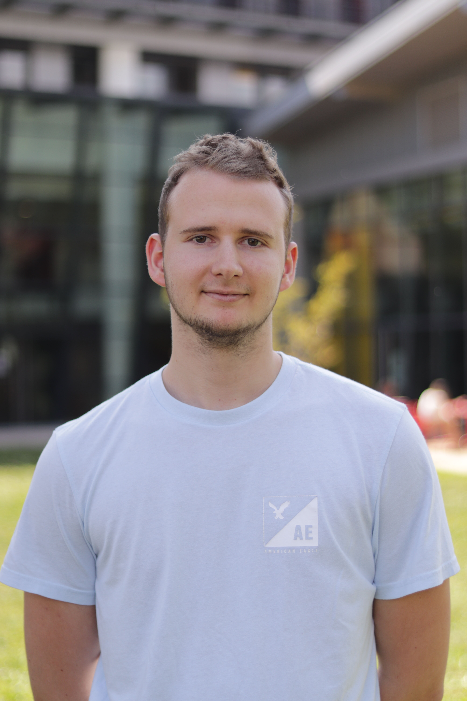

About me
I studied Computer Science and Microelectronics at the Ecole des Mines de Saint-Etienne, one of France's top engineering schools, and spent a year at the University of Auckland in New Zealand.
I now work as an ML Engineer at LIORA in Paris, where I built a RAG platform serving 150 employees daily across 5 FastAPI microservices and 13 containers. I also hold top-rated instructor status for delivering GenAI and MLOps masterclasses to engineering teams at companies like Thales, TotalEnergies, and Safran.
My work spans LLM applications, real-time data engineering, MLOps pipelines, and production observability. I care about building systems that actually run in production and not just in notebooks.
Outside of work, I speak French, English, Japanese, and some Spanish. Take a look at my projects or check out my CV.

Vincent Lalanne. 2026.